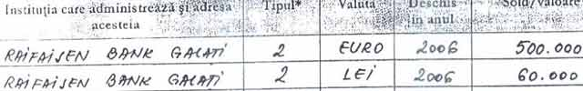

Dacă aţi avea un ceas de mână în valoare de 12 mii de euro, aţi şti ce marcă e? Dacă aţi datora unei bănci jumătate de milion de euro, aţi cunoaşte denumirea instituţiei care v-a dat creditul?
Dacă aţi avea un ceas de mână în valoare de 12 mii de euro, aţi şti ce marcă e? Dacă aţi datora unei bănci jumătate de milion de euro, aţi cunoaşte denumirea instituţiei care v-a dat creditul?
Deputatul cu iz penal Mihail Boldea ar răspunde NU hotărât ambelor întrebări. Iar de această dată, răspunsul n-ar fi un fals.
Bau! Băi Mercier, te-ai speriat?
Alesul gălăţenilor din Colegiul 9, circumscripţia 8, fost membru PD-L, apoi UNPR, abuzat recent de procurorii DIICOT pentru nişte mărunţişuri imobiliare, scrie cu mânuţa lui de parlamentar yoghin, în declaraţia de avere, fix aşa:
Baubau îl sperie pe Mercier
Fie marca Baumercier e din gama Adibas, Nokla, Fuma, caz în care avocatul Mihail Boldea a cumpărat ceasul din talcioc, de la un tuciuriu întreprinzător, fie orologiul deputatului poarta de fapt sigla producătorului elveţian Baume et Mercier, care arată astfel:
întrucât fondatorii firmei sunt ceasornicarul William Baume şi bijutierul Paul Mercier.
Probabil că Mihai Boldea ştie că Toulouse Lautrec e un meci din prima ligă franceză de fotbal (încheiat la egalitate) şi că Ioan Alexandru a colaborat cu Brătescu Voineşti pentru a compune “Puiul”. Altfel nu ne explicăm cum şi Raiffeisen pierde câteva litere, câştiga altele, devenind Raifaisen în grafia distinsului intelectual gălăţean.

Apreciem totuşi faptul că n-a scris chiar Raifaizăn. Dacă aveţi îndoieli, aici găsiţi documentul original. Toate declaraţiile de avere ale deputatului Boldea pot fi consultate aici. Puteţi verifica, banca şi ceasul sunt botezate cu consecvenţă, identic.
Scrie cum vrea doctorul din el, da?
De ce s-ar complica însă tânărul politician Mihail Boldea (36 de ani) cu astfel de nimicuri? În fond e deja cadru didactic universitar la două instituţii (Universitatea Dunărea de Jos – de stat şi Universitatea Danubius – privată), mediator, manager de proiect, doctor în drept şi integrat în absolut la MISA!
Aşa că dacă domnul deputat asistent universitar doctor Mihail Boldea vrea să aibă ceas “Baumercier” şi credit de la “Răii de Faizeni”, are. Pentru că e un tânăr de succes în România anului 2012, ce cultura lui generală! Îi puteţi urmări discursul în clipul de mai jos. Remarcaţi, începând cu minutul 1:30, coerenţa, prestanţa, amplitudinea argumentativă şi acurateţea semantică.
Noi am fost hipnotizaţi şi de privirea adâncă a parlamentarului. Românii ştiu să aleagă.
Boldea a fost sincer, în felul lui
(21 martie 2012)
Pentru că vrea şi pentru că poate, avocatul deputat doctor în drept Mihai Boldea a făcut exact ceea ce promite spre finalul interviului de mai sus. A plecat din ţară, după modelul patentat de fostul său client, guru Gregorian Bivolaru. “Eu în România nu mai stau, vreau doar să plec din România pentru că nu mă interesează această mizerie din justiţie” declara Boldea cu fermitate. Omul a fost sincer. Probabil pentru prima şi ultima dată.


{kind=link}
{kind=link}
{kind=link}
vai! e si doctor?
pe puncte?
E exact ce vrea ceasul lui elveţian! Doar procurorii nu vor să priceapă şi îi spun “domnu’ Boldea, eşti un golan”, după cum declară chiar alesul gălăţean.
I se citeste desteptaciunea pe fruntea lata si vorbeste cu dintii lipiti, cam ca EBA! Daca nu il arestau astia, ajungea ministru si academician.
e mortal baiatu…cine e procurorul Carare? despre ce caz vorbeste? nu inteleg NIMIC din “pledoaria” avocatului Boldea din film. asa se preznta si in instanta?
PDL-istul ideal…
Va mai trebuia o varianta la sondajul de pe Facebook: in spatele averii si relatiilor
După cum vorbește mie îmi dă impresia că este și puțin sărit de pe fix acest băiat ! Mai ales că s-a dovedit că minte!
Comments on this entry are closed.